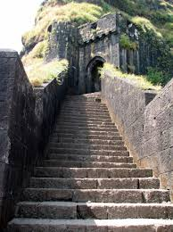
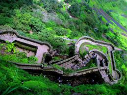
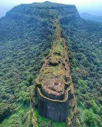
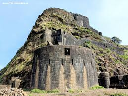

लोहगड किल्ला
Location : Click Here For Google Map
- माहिती
- लोहगड किल्ला महाराष्ट्र राज्याच्या पुणे जिल्ह्यात स्थित एक ऐतिहासिक किल्ला आहे. किल्ला मुंबई-पुणे मार्गावर स्थित असून, लोहमगड किल्ल्याचा इतिहास छत्रपती शिवाजी महाराजांच्या काळाशी संबंधित आहे. हा किल्ला महत्त्वाचा युद्धक्षेत्र म्हणून वापरला जात होता आणि त्याच्याकडून आसपासच्या क्षेत्रावर नियंत्रण ठेवले जात होते. लोहमगड किल्ल्याचे स्थापत्य आणि त्याच्या भिंती, बुरुज आणि संरचनात्मक वैशिष्ट्ये त्याच्या इतिहासातील महत्त्वाचे ठरतात.
किल्ल्याच्या शिखरावरून आसपासच्या परिसराचा सुंदर नजारा दिसतो, ज्यामुळे पर्यटकांना इथे आकर्षित केले जाते. किल्ल्याच्या शिखरावर चढून त्या परिसरातील दृश्यांचा अनुभव घेणे एक अद्वितीय अनुभव ठरतो. किल्ल्याच्या भिंती, दरवाजे आणि बुरुज आजही अस्तित्वात आहेत आणि किल्ल्याच्या ऐतिहासिकतेचा पुरावा दर्शवतात.
आजकाल, लोहमगड किल्ला एक प्रमुख पर्यटन स्थळ म्हणून ओळखला जातो. किल्ल्याच्या निसर्ग सौंदर्यामुळे आणि त्याच्या ऐतिहासिकतेमुळे, पर्यटक किल्ल्यावर चढून त्याची वैशिष्ट्ये पाहतात आणि त्याचा अनुभव घेतात. किल्ल्याच्या शिखरावर चढून ऐतिहासिक स्थळाचा अनुभव घेणे साहसी प्रेमींसाठी एक रोमांचक गोष्ट आहे.
Explore the historical beauty



